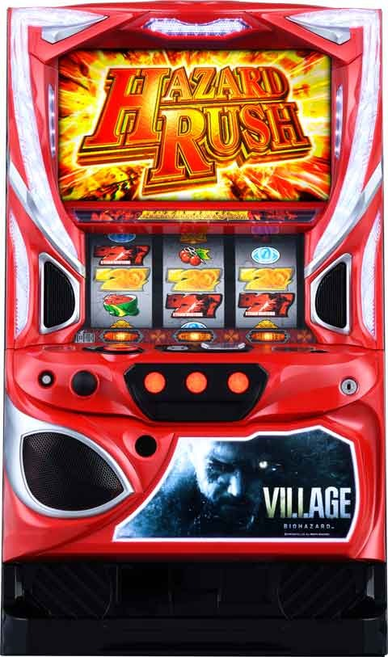

Lバイオハザード ヴィレッジ

[天井情報]
750G+α クライマックスバトル（ＣＢ当選）
リセット時
550G+α
CBスルー天井 最大7スルー
[リセット判別]
不明
[有利区間について]
エンディング到達または、同一有利区間0から差枚1200枚以上？
エンディング到達時、ミランダのクライマックスセブン突入。
AT引き戻しのチャンス。
狙い目
[CB間天井狙い]
440Gから(モードA想定)
前兆発生G数でモード推測出来るため、少しボーダー高めに設定。
通常B以上なら250Gから
通常C以上なら190Gから
[高モード狙い]
前兆法則でモード推測可能。
[ゾーン狙い]
70Gから天国ゾーン抜けまで
推定モードC後は若干天国優遇？
前回 235-250G当選時
60Gから天国ゾーン抜けまで
[CBスルー天井狙い]
7スルー 0Gから
6スルー 0Gから天国抜けまで。天井狙いは400Gから？
[リセット狙い]
90Gから
やめ時
原則即やめ。
ステージ移行時に豪華扉ならG数当選が近い？天国までは回した方が良さそう。
本前兆中にパニックゾーン当選した場合はCB消化後に出てくる。
坑道ステージ以上ならステージ落ちるまでフォロー。
その他
・前兆法則
{kind=link}
・モード別ゾーン
{kind=link}
・PZ失敗時プッシュボタンでのモード示唆
{kind=link}
参考元
基本情報
- メーカー: アデリオン
- 機械割: 98.2% 〜 111.0%
- 導入開始日: 2024年01月09日（火）
- ゲーム性概要: 通常時はゲーム数消化やレア役契機のCZ「パニックゾーン」成功で「クライマックスバトル」へ突入。1戦勝利でATとなる「クライマックスバトル」は15Gの前半と7Gの後半で構成され、ボスキャラ対応のレア役を引けばAT当選確定。前半で対応役以外のレア役を引いた場合、レアパワー（全レア役が対応役）獲得抽選がおこなわれる。 AT「ハザードラッシュ」は純増約2.5枚/Gのゲーム数管理型。初期ゲーム数は「シューティングアタック」で決定する。AT中はゲーム数上乗せ・増殖・特化ゾーンなど、多彩な上乗せ契機が存在。エンディング後は引き戻し期待度約55%の引き戻しゾーン「クライマックス7」へ突入する。


打ち方
打ち方・小役
打ち方（小役狙い）
「最初に狙う絵柄」 左リール上段付近にBARを狙う。

「チェリー停止時」
成立役…弱チェリー／強チェリー

「下段BAR停止時」
成立役…ハズレ／リプレイ／ベル／弱チャンス目

「スイカ停止時」
成立役…スイカ／強チャンス目
中リールにスイカを狙う。右リールの金7はスイカの代用なので、フリー打ちでOK。

「レア役の停止形」

変則押しはNG
通常時、押し順ナビ非発生時は左リール第1停止での消化を推奨する。

解析情報通常時
小役関連
レア役の抽選内容
| 役 | 高確移行 | パニックゾーン |
|---|---|---|
| スイカ | ◎ | ▲ |
| 弱チェリー | ○ | ▲ |
| 弱チャンス目 | ▲ | △ |
| 強チャンス目 | ▲ | ○ |
| 強チェリー | ◎ | ◎ |
※期待度…▲＜△＜○＜◎
レア役ごとの特徴
| 役 | 特徴 |
|---|---|
| スイカ | 低確中のCZ当選で設定5以上に期待 |
| 弱チェリー | 低確中のCZ当選で高設定に期待 |
| 弱チャンス目 | 高確中は約40%でCZ当選 |
| 強チャンス目 | CZ当選のチャンス |
| 強チェリー | CZ当選のチャンス、非当選でも必ず高確へ移行 |
［設定差ナシ］レア役確率
| 役 | 確率 |
|---|---|
| スイカ | 1/86.35 |
| 弱チャンス目 | 1/172.46 |
| 強チャンス目 | 1/299.25 |
| 強チェリー | 1/399.61 |
※レア役合算確率は1/29.99～1/28.82（設定1～6）
内部状態関連
内部状態概要
通常時の内部状態は通常と高確の2種類で、滞在状態に応じてレア役成立時のパニックゾーン当選期待度が変化する。
高確移行率
| 役 | 移行率 |
|---|---|
| スイカ | 41.02% |
| 弱チェリー | 23.05% |
| 弱チャンス目 | 0.39% |
| 強チャンス目 | 0.78% |
| 強チェリー | 100% |
高確は最低20G継続。高確中に再度高確に当選した場合は、20Gが再セットされる。
モード
モード概要
通常時は4種類（＋設定変更時専用モード）のモードが存在し、クライマックスバトル当選までの天井やゾーンゲーム数が変化。設定変更時は必ず設定変更モードへ移行する。
モード別・最大天井
| モード | 天井 |
|---|---|
| 設定変更 | 550G |
| 通常A | 750G |
| 通常B | 650G |
| 通常C | 600G |
| 天国 | 150G |
モードごとの特徴
| モード | 天井 |
|---|---|
| 設定変更 | 設定変更時に移行、150G以内のCB期待度約20% |
| 通常A | 高設定ほど滞在しにくい |
| 通常B | 300G～400GのCB期待度約80% |
| 通常C | 200G～300GのCB期待度約40% |
| 通常C | 400G～500GのCB期待度約45% |
| 天国 | 約33%で100G以内にCB当選 |
※CB…クライマックスバトル
ゾーンごとのクライマックスバトル当選期待度
| ゲーム数 | 通常A | 通常B | 通常C | 天国 | 設定変更 |
|---|---|---|---|---|---|
| 1～50G | ◎ | △ | |||
| 51～100G | 〇 | △ | |||
| 101～150G | 天井 | ◎ | |||
| 151～200G | △ | △ | |||
| 201～250G | ◎ | ◎ | |||
| 251～300G | △ | △ | △ | ||
| 301～350G | ◎ | 〇 | |||
| 351～400G | ◎ | 〇 | |||
| 401～450G | △ | 〇 | 〇 | ||
| 451～500G | 〇 | 〇 | ◎ | ◎ | |
| 501～550G | △ | △ | △ | 天井 | |
| 551～600G | △ | △ | 天井 | ||
| 601～650G | ◎ | 天井 | |||
| 651～700G | △ | ||||
| 701～750G | 天井 |
※期待度…△＜○＜◎
CZ／パニックゾーン
パニックゾーン概要
全役でクライマックスバトルを抽選するチャンスゾーン。レア役成立でチャンスだ。

パニックゾーン性能
| 項目 | 内容 |
|---|---|
| 突入契機 | レア役 |
| 継続ゲーム数 | 10Gor20Gor無限 |
| 消化中の抽選 | 全役でクライマックスバトルを抽選 |
| 消化中の抽選 | レア役はチャンス |
| 成功期待度 | 約35% |
| 備考 | 失敗後は引き戻し抽選あり |
CZ継続ゲーム数割合＆成功期待度
| 継続ゲーム数 | 割合 | 成功期待度 |
|---|---|---|
| 10G | 65.63% | 27.42% |
| 20G | 33.59% | 48.98% |
| 無限 | 0.78% | 100% |
| トータル | ー | 35.23% |
「フリーズ発生でクライマックスバトル！」

フリーズ発生率
| 役 | 発生率 |
|---|---|
| 下記以外 | 1.95% |
| スイカ | 25.29% |
| 弱チェリー | 25.29% |
| 弱チャンス目 | 40.08% |
| 強チャンス目 | 75.10% |
| 強チェリー | 100% |
レア役成立でフリーズのチャンス。同一CZ中に2回レア役を引いた場合は成功が確定する。
終了時の引き戻し当選率
CZ失敗時にCZの引き戻しを抽選。引き戻しの当否にかかわらず、CZ終了時は高確（10G）へ移行する。
CZ・AT当選率
［低確中］CZ当選率
| 設定 | スイカ | 弱 チェリー | 弱 チャンス目 | 強 チャンス目 | 強 チェリー |
|---|---|---|---|---|---|
| 1 | 0.39% | 1.17% | 12.50% | 26.17% | 40.23% |
| 2 | 0.39% | 1.17% | 12.50% | 26.17% | 40.23% |
| 3 | 0.39% | 1.95% | 15.23% | 29.30% | 40.23% |
| 4 | 0.39% | 1.95% | 15.23% | 29.30% | 40.23% |
| 5 | 1.17% | 3.91% | 18.75% | 32.42% | 40.23% |
| 6 | 1.17% | 3.91% | 18.75% | 32.42% | 40.23% |
［高確中］CZ当選率
| 役 | 当選率 |
|---|---|
| スイカ | 2.34% |
| 弱チェリー | 20.31% |
| 弱チャンス目 | 41.80% |
| 強チャンス目 | 63.28% |
| 強チェリー | 84.38% |
解析情報ボーナス時
クライマックスバトル
クライマックスバトル概要
AT突入をかけたバトルで、今作は1戦勝利すればAT確定となる。登場するボスキャラ（5人）ごとに存在する対応レア役を引けばその時点でAT確定。前半15Gと後半7Gの2部構成となっていて、前半ではAT抽選のほかにレアパワー獲得抽選もおこなわれる。

クライマックスバトル性能
| 項目 | 内容 |
|---|---|
| 突入契機 | CZ成功、規定ゲーム数消化 |
| 継続ゲーム数 | エピソード(15G）＋クライマックス7（7G） |
| 消化中の抽選 | エピソード中→勝利抽選・レアパワー獲得抽選 |
| 消化中の抽選 | クライマックス7中→勝利抽選 |
| 消化中の抽選 | 状態共通→対応レア役成立で勝利確定 |
| AT期待度 | 約63% |
ボスキャラごとの対応レア役
| ボス | 対応レア役 |
|---|---|
| ハイゼンベルク | ナシ |
| ドミトレスク | チャンス目 |
| モロー | スイカ |
| アンジー | チェリー |
| ミランダ | 全レア役 |
※対応役以外のレア役成立時はレアパワー（全レア役対応）獲得を抽選
「前半15G：エピソード」 ボスキャラのエピソードが発生。消化中に対応役を引けばAT確定で、対応役以外のレア役を引いた場合、レアパワー獲得が抽選される（レアパワー獲得時は全レア役が対応役に変化）。

「後半7G：クライマックス7」 ハズレを含む全役で勝利（フリーズ発生）抽選をおこなう。対応レア役はもちろんAT確定だ。

エンディング後のクライマックス7
エンディング終了後は、ミランダのクライマックス7（7Gの後半パート）からスタート。勝利（AT引き戻し）期待度は約55%となっている。

レアパワー獲得率
エピソード中のレア役（ボス非対応レア役）成立時に、レアパワーの獲得を抽選。エピソードに突入したタイミングで獲得していることもある。パニックゾーン中にレア役を2回引いてクライマックスバトルに当選した場合は、必ずレアパワーを獲得する。
エピソード中・レアパワー獲得率
| 役 | 獲得率 |
|---|---|
| スイカ | 49.61% |
| 弱チェリー | 49.61% |
| 弱チャンス目 | 49.61% |
| 強チャンス目 | 100% |
| 強チェリー | AT濃厚 |
※弱点役以外のレア役を引いた場合の獲得率、弱点役はAT確定
ボス振り分け＆トータル勝利期待度
| ボス | 振り分け | 期待度 |
|---|---|---|
| ハイゼンベルク | 39.84% | 57.41% |
| ドミトレスク | 35.55% | 60.57% |
| モロー | 21.09% | 70.70% |
| アンジー | 3.13% | 85.06% |
| ミランダA | 0.39% | 71.79% |
| ミランダB | ー | 54.65% |
※ミランダBは引き戻し時に必ず選択
ボスの振り分けに設定差はナシ。ミランダAの選択率は低いが、勝利すれば約50%でAT開始時の特化ゾーンがシューティングアタックハイパーになる。
エピソード中・AT当選率
| 役 | ハイゼン ベルク | ドミトレスク | モロー | アンジー |
|---|---|---|---|---|
| スイカ | 0.39% | 0.39% | 100% | 0.39% |
| 弱チェリー | 0.39% | 0.39% | 0.39% | 100% |
| 弱チャンス目 | 0.39% | 100% | 0.39% | 0.39% |
| 強チャンス目 | 80.08% | 100% | 100% | 80.08% |
| 強チェリー | 100% | 100% | 100% | 100% |
※ミランダA・Bはレア役成立で勝利確定
クライマックス7中の非弱点レア役・AT当選率
| 役 | 当選率 |
|---|---|
| スイカ | 37.11% |
| 弱チェリー | 50.39% |
| 弱チャンス目 | 60.16% |
| 強チャンス目 | 80.08% |
| 強チェリー | 100% |
※各ボスの弱点レア役成立時・レアパワーあり時のレア役成立でAT確定
クライマックス7中の非レア役・AT当選率
| ボス | 当選率 |
|---|---|
| ハイゼンベルク | 7.81% |
| ドミトレスク | 7.42% |
| モロー | 9.77% |
| アンジー | 18.75% |
| ミランダA・B | 6.25% |
初期特化ゾーン／シューティングアタック
シューティングアタック概要
AT開始時に突入する、初期ゲーム数獲得の特化ゾーン。通常とハイパーの2種類が存在し、ハイパーは毎ゲームの上乗せゲーム数が2倍になる。継続保証はいずれも8Gで、保証消化後の押し順ベルの2択を失敗するまで継続する。

シューティングアタック性能
| 項目 | 内容 |
|---|---|
| 突入契機 | AT開始時 |
| 継続ゲーム数 | 8G＋α（ベルこぼしまで） |
| 消化中の抽選 | 全役でゲーム数を上乗せ |
| 平均上乗せ | 100G |
| 備考 | 上乗せ性能が2倍のハイパーあり |
「増殖上乗せ」 ベル、レア役、金7揃い時に発生する可能性あり。増殖発生率は前作よりも約2割アップしている。

［狙えカットイン］ カットイン発生確率は約1/10.7。揃えば10G以上を上乗せ（増殖も発生）、フェイクの場合は保証ゲーム数が減算されない。

「マシンガン上乗せ」 20G以上の上乗せ確定。スイカとリプレイで発生のチャンス！

「2択ナビ」 保証終了後は2択を外す（ベル揃わず）と終了。1/2で上乗せが継続するので、自力での大量上乗せも十分に可能だ。

「シューティングアタックハイパー」

小役ごとの抽選内容・期待度
| 役 | 上乗せ | 増殖 | マシンガン |
|---|---|---|---|
| ベル | ○ | ▲ | ー |
| リプレイ | △ | ー | ○ |
| 1枚役 | ○ | ▲ | ー |
| スイカ | 振り分け 共通 | ー | ◎ |
| 弱チェリー | 振り分け 共通 | △ | ー |
| 弱チャンス目 | 振り分け 共通 | ○ | ー |
| 強チャンス目 | 振り分け 共通 | ◎ | ー |
| 強チェリー | ◎ | ー | |
| 金7揃い | ◎ | ー |
※期待度…▲＜△＜○＜◎
小役ごとの特徴
| 役 | 特徴 |
|---|---|
| ベル | ー |
| リプレイ | マシンガンは＋20G以上 |
| 1枚役 | ー |
| スイカ | マシンガンは＋20G以上 |
| 弱チェリー | ー |
| 弱チャンス目 | ー |
| 強チャンス目 | 増殖確定 |
| 強チェリー | 増殖確定 |
| 金7揃い | ＋10G以上の増殖 |
上乗せ割合
| 役 | ゲーム数上乗せ | 増殖 | マシンガン |
|---|---|---|---|
| ベル | 95.70% | 4.30% | ー |
| 1枚役 | 95.70% | 4.30% | ー |
| リプレイ | 86.72% | ー | 13.28% |
| スイカ | 60.16% | 0.78% | 39.06% |
| 弱チェリー | 49.61% | 50.39% | ー |
| 弱チャンス目 | 33.20% | 66.80% | ー |
| 強チャンス目 | ー | 100% | ー |
| 強チェリー | ー | 100% | ー |
| 金7揃い | ー | 100% | ー |
金7揃い確率
| 項目 | 抽選値 |
|---|---|
| 金7揃い | 1/22.08 |
| フェイク | 1/20.63 |
| カットイン合算 | 1/10.66 |
| カットイン発生時の期待度 | 48.3% |
※金7揃いは増殖確定
［小役契機］上乗せゲーム数振り分け
| 上乗せ | ベル | リプレイ | 1枚役 | レア役 |
|---|---|---|---|---|
| ＋5G | 59.77% | 100% | 59.77% | ー |
| ＋10G | 39.84% | ー | 39.84% | 89.45% |
| ＋20G | 0.39% | ー | 0.39% | 10.16% |
| ＋30G | ー | ー | ー | 0.39% |
［増殖］増殖ゲーム数振り分け
| 増殖 | ベル | 金7揃い | 1枚役 | レア役 |
|---|---|---|---|---|
| ＋5G | 99.22% | ー | 99.22% | ー |
| ＋10G | 0.39% | 98.83% | 0.39% | 98.05% |
| ＋20G | 0.39% | 0.78% | 0.39% | 1.17% |
| ＋30G | ー | 0.39% | ー | 0.78% |
AT／ハザードラッシュ
ハザードラッシュ概要
ゲーム数上乗せ型のAT。レア役での直乗せや特化ゾーンなどでゲーム数を上乗せしつつ、ロング継続を目指すゲーム性だ。エンディング後は必ずクライマックス7（敵はミランダ固定）へ直行するので、引き戻しのチャンスとなる。

ハザードラッシュ性能
| 項目 | 内容 |
|---|---|
| 継続ゲーム数 | シューティングアタックで決定（平均100G） |
| 1Gあたりの純増 | 約2.5枚 |
| 消化中の抽選 | ゲーム数上乗せ、増殖、特化ゾーン |
小役ごとの抽選内容・期待度
| 役 | 上乗せ | BC | NOF | CM |
|---|---|---|---|---|
| スイカ | ー | ー | ー | ◎ |
| 弱チャンス目 | △ | ○ | ▲ | ー |
| 強チャンス目 | 〇 | ◎ | △ | ー |
| 弱チェリー | △ | ▲ | ▲ | ー |
| 強チェリー | ◎ | ○ | ◎ | ー |
※期待度…▲＜△＜○＜◎ ※BC…バイオチャンス、NOF…ナイトオブ・ファイア、CM…クリスモード
小役ごとの特徴
| 役 | 特徴 |
|---|---|
| スイカ | クリスモードのメイン契機 |
| 弱チャンス目 | バイオチャンスに期待 |
| 強チャンス目 | バイオチャンスに期待 |
| 弱チェリー | 当選時はおもに上乗せ |
| 強チェリー | 上乗せ以上確定、ナイトオブ・ファイアに期待 |
AT中・上乗せ（以上）当選率
| 役 | ゲーム数 上乗せ | バイオ チャンス | クリス モード | トータル |
|---|---|---|---|---|
| スイカ | ー | ー | 28.13% | 28.13% |
| 弱チェリー | 28.95% | 1.17% | ー | 30.13% |
| 弱チャンス目 | 26.18% | 23.83% | ー | 50.01% |
| 強チャンス目 | 21.12% | 50.39% | ー | 71.51% |
| 強チェリー | 81.64% | 18.36% | ー | 100% |
クリスモード当選率
クリスモードの当選契機はスイカとゲーム数消化の2つ。 ゲーム数消化は3種類のモードによって期待度の高いゲーム数が変化する。AT突入時は必ず初回モードを選択、以降はナイトオブ・ファイア突入時に次のモードが選択される。
スイカ成立時・クリスモード当選率
| 役 | 当選率 |
|---|---|
| スイカ | 28.13% |
AT中・モード特徴
| モード | 特徴 |
|---|---|
| 初回 | AT開始時に必ず移行するモード |
| 通常 | 100Gごとにチャンス |
| チャンス | 50Gごとにチャンス |
ナイトオブ・ファイア当選後モード振り分け
| モード | 振り分け |
|---|---|
| 通常 | 88.28% |
| チャンス | 11.72% |
ゲーム数消化時・クリスモード当選率
| ゲーム数 | 初回 | 通常 | チャンス |
|---|---|---|---|
| 0G | 46.09% | 32.81% | 32.81% |
| 50G | 10.16% | 0.39% | 19.14% |
| 100G | 60.16% | 46.09% | 46.09% |
| 150G | 0.39% | 0.39% | 19.14% |
| 200G | 46.09% | 46.09% | 46.09% |
| 250G | 0.39% | 0.39% | 19.14% |
| 300G | 46.09% | 46.09% | 46.09% |
| 350G | 0.39% | 0.39% | 19.14% |
| 400G | 46.09% | 46.09% | 46.09% |
| 450G以降、50Gごと | 60.16% | 60.16% | 60.16% |
ナイトオブ・ファイア直撃当選率
| 役 | 当選率 |
|---|---|
| 弱チェリー | 0.39% |
| 弱チャンス目 | 0.39% |
| 強チャンス目 | 10.16% |
| 強チェリー | 41.02% |
バイオチャンス
バイオチャンス概要
AT中のゲーム数上乗せ時の一部で突入する増殖上乗せの高確率ゾーンで、3G間の成立役に応じて増殖発生の有無を抽選。増殖確定後は増殖の基準となるゲーム数の上乗せを抽選する。

バイオチャンス性能
| 項目 | 内容 |
|---|---|
| 突入契機 | 上乗せ時の一部 |
| 継続ゲーム数 | 3G |
| 消化中の抽選 | 増殖抽選、確定後はゲーム数上乗せ抽選 |
| 消化中の抽選 | ベル、リプレイ（約50%）で増殖抽選 |
| 消化中の抽選 | レア役は増殖確定 |
| 増殖成功率 | 約58% |
| 成功時の平均上乗せ | 52G |
「インターフェイスで増殖状況を示唆」 液晶下部のインターフェイスでは、上乗せゲーム数や増殖の発生状況を示唆している。レベル1がデフォルト（突入時）で、レベル2になれば増殖発生濃厚。レベルが上がるほど増殖の期待ゲーム数が増えていく。

バイオチャンス当選時＆前兆中の抽選
バイオチャンス当選時に増殖の基準となるゲーム数と増殖確定状態（紫色）になるかを抽選。前兆中（バイオチャンス当選から告知まで）は、レア役で増殖確定状態への昇格を抽選する。
バイオチャンス当選時・増殖基準ゲーム数振り分け
| 基準 | 弱レア役 | 強チャンス目 | 強チェリー |
|---|---|---|---|
| 10G | 96.88% | 92.19% | 92.19% |
| 20G | 2.73% | 7.03% | 7.03% |
| 30G | 0.39% | 0.78% | 0.78% |
バイオチャンス確定状態当選率
| 役 | バイオチャンス当選時 | バイオチャンス前兆中 |
|---|---|---|
| スイカ | ー | 0.78% |
| 弱チェリー | 0.78% | 0.78% |
| 弱チャンス目 | 0.78% | 0.78% |
| 強チャンス目 | 4.30% | 12.50% |
| 強チェリー | 12.50% | 19.92% |
［増殖確定前］増殖＆基準ゲーム数上乗せ当選率
| 役 | 増殖確定 | 増殖確定かつ 基準＋10G | 増殖確定かつ 基準＋20G |
|---|---|---|---|
| 下記以外 | 0.39% | ー | ー |
| リプレイ | 50.00% | ー | ー |
| ベル揃い | 19.53% | ー | ー |
| 弱レア役 | 98.83% | 0.78% | 0.39% |
| 強チャンス目 | 75.00% | 24.22% | 0.78% |
| 強チェリー | ー | 96.88% | 3.13% |
［増殖確定後］増殖＆基準ゲーム数上乗せ当選率
| 役 | 増殖確定 | 基準＋10G | 基準＋20G |
|---|---|---|---|
| 下記以外 | ー | 0.39% | ー |
| リプレイ | ー | 49.61% | 0.39% |
| ベル揃い | ー | 19.53% | ー |
| 弱レア役 | ー | 98.83% | 1.17% |
| 強チャンス目 | ー | 75.00% | 25.00% |
| 強チェリー | ー | ー | 100% |
クリスモード
クリスモード概要
8G＋αのナイトオブ・ファイアをかけたチャンスゾーン。レア役成立時の抽選や狙えカットイン発生時のBAR揃いでナイトオブ・ファイアへ突入する。保証ゲーム数は8Gで、9G目以降は押し順ベルの2択を外すと終了だが、最低でも狙えカットインが1回以上発生するまでは継続する。

クリスモード性能
| 項目 | 内容 |
|---|---|
| 突入契機 | スイカの抽選、規定ゲーム数到達時 |
| 継続ゲーム数 | 8G＋α |
| 消化中の抽選 | レア役、BAR揃いでナイトオブ・ファイアを抽選 |
| 備考 | 中段チェリーが止まる形のBAR揃いは ナイトオブ・ファイアの継続率90%確定 |
| 成功期待度 | 約42% |
「狙えカットイン」 BARが揃えばナイトオブ・ファイア確定。中段チェリーの形でのBAR揃いなら、90%継続のナイトオブ・ファイアが確定する。

ナイトオブ・ファイア当選率
| 役 | 当選率 |
|---|---|
| スイカ／弱チェリー／弱チャンス目 | 49.61% |
| 強チャンス目 | 100% |
| 強チェリー | 100% |
BAR揃い確率
| 役 | 確率 |
|---|---|
| BAR揃い | 1/33.35 |
ナイトオブ・ファイア
ナイトオブ・ファイア概要
継続率管理のバトル型上乗せ特化ゾーン。バトル勝利で上乗せ＋次セット継続が確定し、成立役やセット数に応じて追撃上乗せも抽選される。

ナイトオブ・ファイア性能
| 項目 | 内容 |
|---|---|
| 突入契機 | レア役時の抽選、クリスモード成功時 |
| 1セットのゲーム数 | 5or6G（初回は5Gの導入あり） |
| 1セットのゲーム数 | 1セット目は継続確定 |
| 継続率 | 60％、65％、75％、90％ |
| 消化中の抽選 | リプレイとレア役で継続書き換え抽選 |
| 消化中の抽選 | 継続確定後は追撃抽選 |
| 備考 | 歌が流れると当該セットを含め3セット継続確定 |
| 備考 | 5の倍数セットは継続で追撃確定 |
| 平均上乗せ | 72G |
「敵の種類で継続期待度が変化」 ウリアシュ・ストレージャ（青）＜ヴァルコラック（緑）＜大型ライカン（赤）の順に継続のチャンスとなる。

［攻防パターン］ クリス先制で継続確定。攻撃を受けてしまっても、耐えれば継続となる。

「書き換え抽選」

小役ごとの抽選内容・期待度
| 役 | 内容 |
|---|---|
| リプレイ | 約40%で継続 |
| レア役 | 約50%で継続 |
| 強チェリー | 継続＋追撃濃厚 |
追撃
ナイトオブ・ファイアのセット継続時の一部で発生する追撃上乗せゾーン。3GのST型となっていて、上乗せ発生で3Gが再セット。リプレイやレア役は上乗せ確定だ。3Gを消化し終えるとナイトオブ・ファイアへ復帰する。

追撃性能
| 項目 | 内容 |
|---|---|
| 突入契機 | ナイトオブ・ファイア継続時の一部 |
| 継続ゲーム数 | 3GのSTタイプ（1セット目は継続確定） |
| 継続率 | 70%or90% |
| 消化中の抽選 | 毎ゲーム、上乗せを抽選（上乗せ確率約1/3） |
| 消化中の抽選 | リプレイとレア役は上乗せ確定 |
| 平均上乗せ | 54G |
継続率振り分け＆上乗せ（継続）抽選
ナイトオブ・ファイア開始時に継続率を抽選。消化中は 継続率を参照して継続抽選がおこなわれ、非継続時はリプレイとレア役で継続への書き換えが抽選 される（継続確定後は追撃発生を抽選）。継続が確定したタイミングで増殖の発生を抽選していて、非発生時は振り分けで上乗せゲーム数を決定する。
ナイトオブ・ファイア突入時の継続率振り分け
| 継続率 | 振り分け |
|---|---|
| 60% | 56.64% |
| 65% | 33.98% |
| 75% | 8.59% |
| 90% | 0.78% |
※1セット目（継続確定）を除く、小役での書き換え込みの実質継続率
［非継続時］継続書き換え当選率
| 抽選結果 | 弱レア | 強チャンス目 | 強チェリー | リプレイ |
|---|---|---|---|---|
| 継続のみ | 49.22% | 57.03% | ー | 40.63% |
| 継続＋追撃70% | 0.78% | 42.19% | 98.83% | 0.39% |
| 継続＋追撃90% | 0.39% | 0.78% | 1.17% | ー |
| トータル | 50.39% | 100% | 100% | 41.02% |
［継続時］追撃＆追撃種別昇格当選率 非追撃確定時
| 抽選結果 | 弱レア | 強チャンス目 | 強チェリー | リプレイ |
|---|---|---|---|---|
| 追撃70% | 13.67% | 98.83% | 98.05% | 2.73% |
| 追撃90% | 0.78% | 1.17% | 1.95% | 0.39% |
| トータル | 14.45% | 100% | 100% | 3.13% |
追撃70%時
| 抽選結果 | 弱レア | 強チャンス目 | 強チェリー | リプレイ |
|---|---|---|---|---|
| 追撃90% | 1.17% | 12.50% | 46.09% | 0.78% |
セット継続時・増殖当選率
| 当選率・増殖ゲーム数 | 当選率・振り分け |
|---|---|
| 当選率 | 9.77% |
| 5G | 94.53% |
| 10G | 4.30% |
| 20G | 0.78% |
| 30G | 0.39% |
セット継続時・上乗せゲーム数振り分け
| 上乗せ | 1セット目 | 2セット目以降 |
|---|---|---|
| ＋5G | ー | 67.58% |
| ＋10G | 98.44% | 31.25% |
| ＋20G | 1.17% | 0.78% |
| ＋30G | 0.39% | 0.39% |
| 平均 | 10.20G | 6.78G |
※レア役を引いていた場合は＋10G以上濃厚
セット継続時・追撃発生率（小役での当選除く）
| セット | 発生率 |
|---|---|
| 5の倍数セット以外 | 0.39% |
| 5の倍数セット | 100% |
追撃中の継続＆上乗せ抽選
追撃中（3G）の成立役を参照して、継続の当否を抽選。継続時の役に応じて上乗せされるゲーム数が変化する。
追撃中の継続当選率
| 役 | 追撃70% | 追撃90% |
|---|---|---|
| レア役以外 | 19.53% | 40.63% |
| リプレイ | 100% | 100% |
| レア役 | 100% | 100% |
継続時・上乗せゲーム数振り分け
| 上乗せ | レア役以外 | 弱レア役 | 強チャンス目 | 強チェリー |
|---|---|---|---|---|
| ＋10G | 98.83% | ー | ー | ー |
| ＋20G | 0.78% | 76.56% | 29.69% | ー |
| ＋30G | 0.39% | 21.88% | 56.25% | 63.28% |
| ＋100G | ー | 1.17% | 12.89% | 33.59% |
| ＋300G | ー | 0.39% | 1.17% | 3.13% |
| 平均 | 10.16G | 23.83G | 38.05G | 58.83G |
演出情報
通常時
通常時・ステージ解説
| ステージ | 内容 |
|---|---|
| 集落 | デフォルト |
| ドミトレスク城 | デフォルト |
| 人造湖 | 高確示唆 |
| 坑道 | CZ当選示唆 |
| 菌根 | 本前兆示唆 |
「集落」

「ドミトレスク城」

「人造湖」

「坑道」

「菌根」

ステージ別・CZ期待度
| ステージ | 期待度 |
|---|---|
| 村 | 1.56% |
| 城 | 1.56% |
| 夕方 | 12.50% |
| 菌根 | ー |
| 坑道 | 84.38% |
ステージ移行の法則
| 法則 | 内容 |
|---|---|
| 1 | CZ終了時は高確10Gを獲得するため 基本的に夕方からスタート |
| 2 | CZ終了時の村・城スタートはCZ当選もしくは 32G以内のクライマックスバトル濃厚 |
| 3 | 坑道移行でCZ期待度80%以上 |
ミッション・CZ期待度
| ミッション | 坑道以外 | 坑道 | トータル |
|---|---|---|---|
| トラップを回避しろ | 9.05% | 48.16% | 19.64% |
| 扉をこじ開けろ | 40.45% | 67.95% | 56.09% |
| ライカンに遭遇しろ | 90.54% | 99.12% | 97.65% |
［トラップを回避しろ］

［扉をこじ開けろ］

［ライカンに遭遇しろ］

AT終了時のモード別・ステージ選択割合
| モード | 集落 | ドミトレスク城 |
|---|---|---|
| 通常A | 50.00% | 50.00% |
| 通常B | 40.00% | 60.00% |
| 通常C | 40.00% | 60.00% |
| 設定変更 | 40.00% | 60.00% |
| 天国 | 40.00% | 60.00% |
AT終了時ステージ別・モード滞在期待度
| パターン | 期待度 |
|---|---|
| 集落時の通常A | 65.0% |
| ドミトレスク城の通常B以上 | 74.0% |
| 集落時の天国 | 約33% |
| ドミトレスク城の天国 | 約38% |
150G以内のクリス会話演出・モード示唆パターン
| No. | 会話 | 示唆 |
|---|---|---|
| 1 | 「この事件を追ってもう3年…」 | 通常B以上期待度アップ |
| 2 | 「この事件を追ってもう3年…」 →「だが、これで終わらせる！」 | 通常B以上確定 |
会話別・モード選択率
| モード | No.1 | No.2 |
|---|---|---|
| 通常A | 6.25% | ー |
| 通常B | 8.10% | 0.39% |
| 通常C | 8.10% | 0.39% |
| 設定変更 | 8.10% | 0.39% |
| 天国 | 8.10% | 0.39% |
扉演出時にPUSHボタンが光った時のセリフ モード示唆パターン
| No. | セリフ | 示唆 |
|---|---|---|
| 1 | イーサン「邪悪な気配を感じる」 | デフォルト |
| 2 | イーサン「何かが迫ってきている…」 | 通常B以上示唆［弱］ |
| 3 | 占い師「あの子に危険が迫っている」 | 通常B以上示唆［強］ |
| 4 | 占い師「最後の灯りを待つのじゃ」 | 通常B以上 |
| 5 | ミア「イーサン…必ず生きて帰って」 | 天国 |
セリフごとのモード振り分け
| モード | No.1 | No.2 | No.3 | No.4 | No.5 |
|---|---|---|---|---|---|
| 通常A | 76.87% | 20.00% | 3.13% | ー | ー |
| 通常B | 67.19% | 25.00% | 6.25% | 1.56% | ー |
| 通常C | 64.53% | 25.00% | 7.34% | 3.13% | ー |
| 設定変更 | 67.19% | 25.00% | 6.25% | 1.56% | ー |
| 天国 | 79.69% | 12.50% | 3.13% | 3.13% | 1.56% |
［扉演出］ ジャッジメントイービルとパニックゾーン終了時に発生する扉演出では、PUSHボタンを押すと発生するセリフでモードを示唆する。

次回クライマックスバトルのボス示唆
次回のクライマックスバトルで出現するボスがモロー以上の場合、通常ゲーム数を175G回したタイミングでメニュー画面の背景が 約50% で変化する。

メニュー画面変化時・ボス振り分け
| 選択ボス | 振り分け |
|---|---|
| モロー | 85.70% |
| アンジー | 12.70% |
| ミランダA | 1.60% |
クライマックスバトル当選期待度
| 演出 | パターン | 期待度 |
|---|---|---|
| 占い師演出 | 白文字 | 48.8% |
| 占い師演出 | 赤文字 | 88.9% |
| 占い師演出 | ボタン停止時に白文字 | 20.4% |
| 占い師演出 | ボタン停止時に赤文字 | 98.4% |
| 主観襲撃演出 | 心音_赤 | 45.8% |
| ボス通過 | リール停止ごとに弱→中→強 | 47.6% |
| ボス通過 | 第1停止弱→第3停止強 | 85.9% |
| ボス通過 | 第3停止でいきなり強 | 89.9% |
| ミランダ前兆（ミランダ系の演出が頻発） | 86.2% |
［占い師演出］

［主観襲撃演出］

［ボス通過］ 通過するボスが近いほどチャンス（画像は強パターン）。

前兆
ジャッジメントイービル
規定ゲーム数消化時に突入する前兆ステージ。枠の色が昇格するほど期待度がアップしていき、ラストの演出をクリアすればクライマックスバトルが確定する。液晶内に違和感があれば激アツ!?

ゲーム数ごとの前兆法則
| ゲーム数 | 法則 |
|---|---|
| 0～50G | 全モードで前兆ステージ移行の可能性あり |
| 51～100G | 前兆ステージへ移行しづらいが、移行時の期待度は約60% |
| 101～150G | 全モードで前兆ステージ移行の可能性あり 移行しなければ通常Aを否定 |
| 151～200G | 前兆ステージ移行で通常B以上期待度約80% |
| 201～250G | 全モードで前兆ステージ移行の可能性あり 移行しなければ通常B濃厚 |
| 251～300G | 前兆ステージ移行で通常C確定 |
| 301～350G | 前兆ステージ移行で通常B濃厚 |
| 351～400G | 前兆ステージ移行で通常A否定の期待度約80% |
| 401～450G | 前兆ステージ移行で通常Cのチャンス |
| 451～500G | モード不問で期待度が高い |
※前兆ステージ…ジャッジメントイービル
枠色別・本前兆期待度
| 最終的な色 | 期待度 | 割合 |
|---|---|---|
| 白 | 100% | 2.99% |
| 青 | 6.58% | 12.00% |
| 黄 | 18.98% | 33.00% |
| 赤 | 91.91% | 52.00% |
| 虹（AT濃厚） | 100% | 0.01% |
150G以内に移行したジャッジメントイービルで赤までステップアップし、ハズれた（フェイクだった）場合は通常Aを否定。虹はAT直撃濃厚となる。
演出期待度
| 演出 | パターン | 期待度 |
|---|---|---|
| 違和感演出 | 1回 | 53.16% |
| 違和感演出 | 2回 | 100% |
| 違和感演出 | 3回 | 100%（AT濃厚） |
| ミア祈り演出 | 白文字でレア役否定 | 41.26% |
| ミア祈り演出 | 赤文字でレア役否定 | 98.74% |
| シャッター | 大エフェクト | 92.60% |
| シャッター | 金シャッター | 100% |
| 4貴族演出 | 赤文字 | 88.56% |
［枠色：虹］

［違和感演出発生回数］ 液晶内に違和感が発生したタイミングでPUSHボタンを押すと、左下に黒山羊の木彫りが出現する（1個＝違和感1回）。本前兆時の約22%で違和感が発生、トータルの違和感発生率は約10%。

［ミア祈り演出：赤文字］

［シャッター：大エフェクト］

［金シャッター］

［4貴族演出：赤文字］

連続演出トータル期待度
| ボス | 期待度 |
|---|---|
| ダニエラ | 9.18% |
| ウリアシュ | 9.60% |
| モロー | 21.00% |
| シュツルム | 55.00% |
| ベビー | 84.00% |
| ミランダ | 100% |
チャンスアップ（CU）回数別期待度
| ボス | 赤タイトル | CU1回 | CU2回 | CU3回 |
|---|---|---|---|---|
| ダニエラ | 93.45% | 21.20% | 100% | AT直撃 |
| ウリアシュ | 93.38% | 20.10% | 100% | AT直撃 |
| モロー | 95.36% | 34.29% | 100% | AT直撃 |
| シュツルム | 96.18% | 65.23% | 100% | AT直撃 |
| ベビー | 96.66% | 88.80% | 100% | AT直撃 |
CZ／パニックゾーン
演出法則・CZ期待度
| 演出 | パターン | 内容 |
|---|---|---|
| 会話演出 | 青セリフ | 最終ゲームでのフリーズ発生 orCZ継続期待度アップ |
| 会話演出 | 赤セリフ | フリーズ濃厚（当該ゲームor最終ゲーム） |
| ステップアップ 演出 | ステップ1 | リプレイ対応、矛盾で最終ゲームでの フリーズ期待度アップ |
| ステップアップ 演出 | ステップ2 | 弱レア役対応（※） |
| ステップアップ 演出 | ステップ3 | 強レア役対応（※） |
| 樽爆破演出 | レア役否定でフリーズ期待度95%以上 | |
| ノイズ | 赤 | レア役濃厚かつチャンス レア役否定でフリーズ濃厚 |
| 最終ゲーム | 継続ジャッジ以外発生でフリーズ濃厚 | |
| 最終ゲーム以外 | 転落あおり発生でフリーズ濃厚 |
※対応役否定でフリーズ濃厚（当該ゲームor最終ゲーム）
［会話演出：赤文字］

［ステップアップ演出：ステップ3］ 青＜緑＜赤の順にステップアップ。

［樽爆破演出］

［ノイズ：赤］

クライマックスバトル
予告音発生率＆レア役期待度
| 項目 | 抽選値 |
|---|---|
| 確率 | 1/11.64 |
| レア役期待度 | 35.23% |
予告音発生でレア役成立のチャンス。！が出現した場合はAT当選濃厚となる（AT当選時の約1/16で！が出現）。
ミランダが選択されている期待度
| ボス | 期待度 |
|---|---|
| ハイゼンベルク | 0.97% |
| ドミトレスク | 1.09% |
| モロー | 1.82% |
| アンジー | 11.11% |
当選したボスがミランダの場合、エピソード冒頭のデューク案内パートでは一旦別キャラの告知が発生。告知後にミランダに変化する形で告知される。内部的にミランダの場合に選択されるボスの割合は25%ずつで、アンジー選択時が内部的にミランダである可能性がもっとも高い。
［デューク案内：ルーレット］

クライマックス7・1回あたりの予告音発生期待度
| 項目 | 期待度 |
|---|---|
| 確率 | 40.90% |
※ボスがハイゼンベルク時の期待度
予告音＆成立役別・AT当選期待度＆割合 トータル
| 項目 | 予告音ナシ | 予告音アリ |
|---|---|---|
| 発生確率 | 1/1.08 | 1/13.81 |
| AT期待度 | 5.43% | 59.66% |
| AT当選ゲーム発生割合 | 51.41% | 48.59% |
| AT告知時発生割合 | 49.55% | 50.45% |
レア役以外成立時
| 項目 | 予告音ナシ | 予告音アリ |
|---|---|---|
| 発生確率 | 1/1.08 | 1/24.87 |
| AT期待度 | 5.31% | 65.37% |
| AT当選ゲーム発生割合 | 65.20% | 34.80% |
| AT告知時発生割合 | 55.37% | 44.63% |
弱レア役成立時
| 項目 | 予告音ナシ | 予告音アリ |
|---|---|---|
| 発生確率 | 1/1371.09 | 1/37.36 |
| AT期待度 | 100% | 45.41% |
| AT当選ゲーム発生割合 | 5.66% | 94.34% |
| AT告知時発生割合 | 6.84% | 93.16% |
強レア役成立時
| 項目 | 予告音ナシ | 予告音アリ |
|---|---|---|
| 発生確率 | 1/2322.38 | 1/184.72 |
| AT期待度 | 100% | 87.70% |
| AT当選ゲーム発生割合 | 8.32% | 91.68% |
| AT告知時発生割合 | 6.84% | 93.16% |
※ボスがハイゼンベルク時の数値
予告音アリ時のレア役出現期待度は約44%。予告音ナシでレア役が成立すればAT確定だ。
AT当選時・プレミアム告知発生確率＆AT当選時の発生割合
| 演出系統 | 確率 | 割合 |
|---|---|---|
| 下パネル消灯 | 1/32.00 | 3.13% |
| 画面揺れ | 1/22.02 | 4.54% |
| プレミアム告知 | 1/17.33 | 5.77% |
| プレミアム系トータル | 1/7.44 | 13.44% |
| 通常告知 | ー | 86.56% |
PUSHボタンプレミアム発生割合
| パターン | 割合 |
|---|---|
| 非発生 | 62.50% |
| PUSH1回 | 4.69% |
| PUSH2回 | 4.69% |
| PUSH3回 | 18.75% |
| PUSH4回 | 4.69% |
| PUSH5回 | 4.69% |
※AT当選ゲームでPUSHボタンを規定回数押すと、先告知が発生する可能性あり
その他プレミアム演出
| No. | 内容 |
|---|---|
| 1 | 次ゲーム告知時の一部で プレミアムカウントダウン（金）が発生 |
| 2 | 押し順ナビがレバーON時に発生 |
［プレミアムカウントダウン］

初期特化ゾーン／シューティングアタック
狙えカットイン確率・期待度
| タイミング | 色 | 確率 | 期待度 | 発生割合 |
|---|---|---|---|---|
| レバー ON時 | 青 | 1/76.94 | 65.04% | 18.66% |
| レバー ON時 | 赤 | 1/17222.93 | 100% | 0.13% |
| リール 回転開始時 | 青 | 1/17.94 | 25.28% | 31.10% |
| リール 回転開始時 | 赤 | 1/101.08 | 100% | 21.84% |
| リール 回転開始時 | 青→赤 | 1/674.78 | 100% | 3.27% |
| 押し合い→狙え発生 | 1/73.55 | 83.29% | 25.00% |
狙えカットイン系の演出法則
| パターン | 法則 |
|---|---|
| レバーON時の赤 | ＋20G以上確定 |
| 青→赤 | ＋20G以上の期待度アップ |
| 押し合い | 約50%で狙えカットインに発展 |
押し合い演出法則
| 演出 | パターン | 確率 | 右側期待度 |
|---|---|---|---|
| 押し合い | ハンドガン・マグナム | 1/13.81 | 20.43% |
| 押し合い | ハンドガン・マシンガン | 1/30.73 | 38.80% |
［狙えカットイン］

［押し合い］

「紫ナビは増殖濃厚」 紫ナビ発生で増殖濃厚かつ、2段階以上の増殖にも期待できる。共通ベルが成立していれば2段階増殖濃厚だ。
その他演出法則
| 演出 | 法則 |
|---|---|
| マグナム | 増殖確定 |
| マグナム | 押し合い時は＋5G以上の増殖 |
| マグナム | 第1停止時せり上がり経由なら＋10G以上の増殖 |
| マシンガン | ＋50G以上濃厚となる超マシンガンあり |
| マシンガン | 押し合いのマグナム・マシンガンから マシンガン選択で内部的に超マシンガン濃厚 |
| スペシャル チャンス | 2段階以上の増殖確定（最低80G） |
| スペシャル チャンス | 2段階増殖の場合は基準＋20G以上 3段階増殖の場合は基準＋10G以上 |
［超マシンガン］


AT／ハザードラッシュ
AT中のステージ解説＆ナイトオブ・ファイア本前兆期待度
| ステージ | 内容 | 期待度 |
|---|---|---|
| 集落 | デフォルト | ー |
| 城 | 前兆示唆 | 44.93% |
| 工場 | 前兆示唆 （期待度アップ） | 89.33% |
| クリス | 本前兆確定 | 100% |
「集落」

「城」

「工場」

「クリス」 ステージ移行あおりが3連続すればステージ昇格確定、4連続ならクリスステージへの移行が確定する。

規定ゲーム数消化時の演出期待度
規定ゲーム数到達時（50G刻み）は、ステージ移行あおりパートを経て、遷移する鎖あおりでクリスモードの当否を告知。各パートの移行は押し順ベル回数で管理されている。
周期（50G刻み）到達時の前兆の流れ
| 演出 | ベル回数 | 特徴 |
|---|---|---|
| ステージ移行あおり | 0～10回 | ステージ移行あおりや 状態示唆演出が発生 |
| 鎖あおり | 4回～ | おもに鎖演出が発生 |
| 鎖あおり | 4回～ | 残りベル回数が少なくなるほど 強めの状態示唆が発生しやすい |
周期別のベル回数の特徴
| 周期 | 内容 |
|---|---|
| 0G | 12回、13回以外で告知なら本前兆のチャンス |
| 末尾50G （450G以降を除く） | 8回以外で告知なら本前兆のチャンス 150G以降はフェイク前兆へ移行しづらい |
| 100G刻み ＆450G以降 | 12回、13回以外で告知なら本前兆のチャンス |
周期到達時 ステージ移行あおり終了までのベル回数別本前兆期待度
| ベル回数 | 期待度 |
|---|---|
| 1回 | 87.68% |
| 2～3回 | 93.48% |
| 4～5回 | 26.74% |
| 6回以上 | 本前兆濃厚 |
周期到達から鎖あおり終了までのベル回数別本前兆期待度
| ベル回数 | 期待度 |
|---|---|
| 7回 | 95.98% |
| 8回 | 10.88% |
| 9回 | 79.91% |
| 10～11回 | 89.88% |
| 12～13回 | 36.15% |
| 14回以上 | 66.70% |
※周期ゲーム数到達から鎖あおりが終わるまでのベル回数
ステージチェンジパターン
| ゲーム数 | パターン |
|---|---|
| 即移行 | 周期到達時に、即ステージチェンジ |
| 1Gで移行 | ステージ移行あおりなしでステージチェンジ （1Gで移行） |
| あおり経由で移行 | ステージ移行あおりを経由してステージチェンジ （2～3Gで移行） |
ステージチェンジパターン別・本前兆期待度
| タイミング | 期待度 |
|---|---|
| 即移行 | 87.68% |
| 1G移行 | 64.31% |
| あおり経由移行 | 52.27% |
リプレイでステージチェンジするとチャンス。
規定ゲーム数到達示唆系演出期待度
| 演出 | パターン | 期待度 |
|---|---|---|
| 石碑オーラ演出 | 第3停止時白 | 42.37% |
| 石碑オーラ演出 | 白強パターン | 85.54% |
| 石碑オーラ演出 | カットイン＋白 | 100% |
| 予告音＋ 枠エフェクト | 第3停止・白弱パターン | 45.77% |
| 予告音＋ 枠エフェクト | 白強パターン | 100% |
| 弱弾痕演出 | 弾痕のみ | 46.89% |
| 弱弾痕演出 | 青CHANCE | 78.82% |
| 弱弾痕演出 | クリスアイ＋青CHANCE | 100% |
| ゲーム数カウンタ | 赤に変化（※） | 100% |
| 鎖あおり | 赤 | 100% |
※本前兆時の6.25%でゲーム数カウンタの色が赤に変化する
［石碑オーラ演出］

［枠エフェクト演出］

［弱弾痕演出：クリスアイ］

［鎖あおり：赤］

鎖の色は青がデフォルトで、赤なら本前兆濃厚。あおりが発生する小役にも法則性があり、基本的には押し順ベルで発生する。共通ベルで発生なら期待度アップ、リプレイなら本前兆濃厚。押し順ベルで発生した場合も、ナビの発生タイミングがいつもより遅いと本前兆濃厚だ。
ナイトオブ・ファイアの前兆
ナイトオブ・ファイア当選時の前兆は前半・後半・最終の3パート構成となっていて、それぞれの演出パターンによって期待度を示唆する。
ナイトオブ・ファイアの前兆構成
| パート | ゲーム数 | 特徴 |
|---|---|---|
| 前半 | 1～10G | ステージ移行や ハウンドウルフの紋章あおり出現 |
| 後半 | ランダム | 前半同様に、ステージ移行や ハウンドウルフの紋章あおり出現 |
| 最終 | 約5G | ミッション発展をあおる |
「前半パート」
前半パートのおもな構成
| パターン | 特徴 |
|---|---|
| 後半パート移行 | ハウンドウルフの紋章出現 |
| ステージ移行 | ステージ移行あおり後にステージが移行 |
| ステージ移行フェイク | ステージ移行あおりのみ発生 |
パターン別・本前兆期待度 集落ステージ滞在時
| パターン | 期待度 | 本前兆時の選択割合 |
|---|---|---|
| 後半パート移行 | 90.13% | 26.43% |
| ステージ移行 | 33.64% | 38.59% |
| ステージ移行フェイク | 54.29% | 34.98% |
城以上のステージ滞在時
| パターン | 期待度 | 本前兆時の選択割合 |
|---|---|---|
| 後半パート移行 | 62.42% | 27.05% |
| ステージ移行 | 92.43% | 25.75% |
| ステージ移行フェイク | 34.38% | 47.20% |
集落ステージ滞在時は基本的に城ステージへ移行するが、直接後半パートへ移行すれば本前兆の大チャンス。前半パートは最大10Gで、何ゲーム目で後半パート移行やステージ移行が発生するかによっても期待度が変化する。
［集落ステージ］消化ゲーム数ごとの前兆パターン
| No. | ゲーム数 | 前兆パターン | ||
|---|---|---|---|---|
| 1 | 1G | 後半移行 | ー | ー |
| 2 | 2G | 後半移行 | ー | ー |
| 3 | 3G | ステージ移行 | ー | ー |
| 4 | 4G | ステージ移行 | ー | ー |
| 5 | 5G | ステージ移行 | 後半移行 | ー |
| 6 | 6G | 移行フェイク | 後半移行 | ー |
| 7 | 7G | 後半移行 | ステージ移行 | ー |
| 8 | 8G | 移行フェイク | ステージ移行 | 後半移行 |
| 9 | 9G | 移行フェイク | ステージ移行 | 後半移行 |
| 10 | 10G | ステージ移行 | 移行フェイク | 後半移行 |
※移行フェイク…ステージ移行のあおりのみ発生
［集落ステージ］パターン別・本前兆期待度
| No. | 期待度 | 選択率 | 当選時の割合 |
|---|---|---|---|
| 1 | 100% | 1.94% | 4.08% |
| 2 | 87.63% | 2.21% | 4.08% |
| 3 | ー | ー | ー |
| 4 | 71.87% | 4.43% | 6.69% |
| 5 | 27.31% | 48.02% | 27.57% |
| 6 | 47.20% | 16.17% | 16.05% |
| 7 | 88.74% | 9.79% | 18.27% |
| 8 | 59.57% | 10.94% | 13.71% |
| 9 | 70.49% | 3.52% | 5.22% |
| 10 | 97.42% | 2.11% | 4.32% |
［城以上のステージ］ゲーム数ごとの前兆パターン
| No. | ゲーム数 | 前兆パターン | ||
|---|---|---|---|---|
| 1 | 1G | 後半移行 | ー | ー |
| 2 | 2G | 後半移行 | ー | ー |
| 3 | 3G | 後半移行 | ー | ー |
| 4 | 4G | ステージ移行 | ー | ー |
| 5 | 5G | 移行フェイク | 後半移行 | ー |
| 6 | 6G | 移行フェイク | 後半移行 | ー |
| 7 | 7G | ステージ移行 | 後半移行 | ー |
※移行フェイク…ステージ移行のあおりのみ発生
［城以上のステージ］パターン別・本前兆期待度
| No. | 期待度 | 選択率 | 当選時の割合 |
|---|---|---|---|
| 1 | 100% | 0.35% | 0.74% |
| 2 | 63.37% | 10.57% | 14.08% |
| 3 | 60.02% | 9.68% | 12.22% |
| 4 | 88.83% | 8.98% | 16.77% |
| 5 | 31.36% | 52.13% | 34.38% |
| 6 | 46.33% | 13.15% | 12.82% |
| 7 | 100% | 4.27% | 8.98% |
「後半パート」
ハウンドウルフ紋章出現回数別・本前兆期待度
| 出現回数 | 期待度 |
|---|---|
| 1回 | 44.05% |
| 2回 | 49.58% |
| 3回 | 78.22% |
| 4回 | 94.58% |
| 5回 | 100% |
ハウンドウルフの紋章が出現した回数（前半パートから後半パートへ移行した時の出現回数含む）で期待度が変化。紋章の色は赤なら大チャンス！
［ハウンドウルフの紋章］

「最終パート」
チャンスアップ頻度別・本前兆期待度
| 頻度 | 期待度 | 当選時の割合 |
|---|---|---|
| 激低 | 19.81% | 16.18% |
| 低 | 60.89% | 51.36% |
| 高 | 87.83% | 26.37% |
| 激高 | 100% | 6.09% |
最終パートはシンプルで、各演出でチャンスアップが発生するほど本前兆期待度が高まる。
ミッション成功期待度（ナイトオブ・ファイア前兆中）
| ミッション | 期待度 |
|---|---|
| 脱出ミッション | 28.55% |
| 迎撃ミッション | 66.03% |
| 爆撃ミッション | 100% |
ミッション・上乗せ以上期待度
| ミッション | 上乗せ期待度 | バイオチャンス 期待度 |
|---|---|---|
| ドライブミッション | 37.44% | 42.76% |
| 爆破ミッション | 64.67% | 40.41% |
| バトルミッション | 91.88% | 44.78% |
| 確定ミッション（銃口演出） | 100% | 100% |
※カットイン発生→失敗はバイオチャンス濃厚 シャッター擬似連4回経由を除き、確定ミッションは確定バイオチャンス濃厚
［脱出ミッション］

［迎撃ミッション］

［爆撃ミッション］

［ドライブミッション］

［爆破ミッション］

［バトルミッション］

［確定ミッション（銃口演出）］

演出別・上乗せ＆バイオチャンス期待度
| 演出 | レア役時の 上乗せ期待度 | バイオチャンス 期待度 |
|---|---|---|
| ライカン演出 | 1.05% | 100% |
| 石碑オーラ演出 | 23.69% | 19.22% |
| 枠エフェクト演出 | 4.20% | 17.05% |
| ヘリ演出 | 29.69% | 32.13% |
| ステップアップウインドウ演出 | 5.92% | 21.78% |
| 聖杯演出 | 93.56% | 37.26% |
| ノイズフラッシュバック演出 | 64.09% | 24.96% |
| デュークルーレット演出 | 68.94% | 26.46% |
| シャッター演出 | 89.52% | 67.16% |
| 銃口演出 | 100% | 100% |
| 弾痕演出 | 96.07% | 11.74% |
演出法則
| 演出 | 特徴 |
|---|---|
| ライカン演出 | レア役時はスイカがメイン スイカ以外のレア役ならBC濃厚 |
| 石碑オーラ演出 | カットインor第3停止時色変化で前兆に期待 |
| 枠エフェクト演出 | 第3停止時色変化で前兆に期待 |
| ヘリ演出 | ミア登場で上乗せ期待大 |
| ステップアップ ウインドウ演出 | 赤ver.なら上乗せ期待大 イーサンはBC濃厚 ミランダorローズはBC＋NOF濃厚 |
| 聖杯演出 | 紫ならBC or NOF濃厚 |
| ノイズフラッシュバック演出 | 赤ノイズなら上乗せ濃厚 |
| デュークルーレット演出 | 直乗せ発生時はBCのチャンス |
| シャッター演出 | レア役時はシャッター擬似連へ移行 |
| 銃口演出 | AT中のもっとも期待度の高い演出 |
| 弾痕演出 | 直乗せ時のメイン演出 前兆移行でBC期待度がアップ |
| ナビ系 | ！ナビは上乗せ期待度アップ |
| ナビ系 | !!!内はBC期待度大幅アップ |
| ナビ系 | もみじ柄の!!!ならBC＋NOF濃厚 |
※BC…バイオチャンス、NOF…ナイトオブ・ファイア
スイカ成立時の演出別・クリスモード当選割合
| 演出 | 非当選 | フェイク フリーズ | クリスモード 当選 |
|---|---|---|---|
| ライカン演出（トータル） | 10.95% | 53.85% | 35.20% |
| ステップアップウインドウ演出 | 30.67% | 50.29% | 19.03% |
| 聖杯演出 | ー | ー | 100% |
| デュークルーレット演出 | ー | ー | 100% |
強ライカン演出・クリスモード当選割合
| パターン | 非当選 | フェイク フリーズ | クリスモード 当選 |
|---|---|---|---|
| カットインなし | 46.71% | 25.13% | 28.16% |
| カットインあり | ー | 72.08% | 27.92% |
| カットインあり＋青チャンス | ー | 22.29% | 77.71% |
| カットインあり＋赤チャンス | ー | ー | 100% |
ステップアップ演出・クリスモード当選割合
| パターン | 非当選 | フェイク フリーズ | クリスモード 当選 |
|---|---|---|---|
| モロー | 31.42% | 51.52% | 17.06% |
| クリス | ー | ー | 100% |
スイカ成立時の演出別・フリーズ＆クリスモード期待度
| 演出 | フリーズ 発生率 | フリーズ時 期待度 | |
|---|---|---|---|
| ライカン演出 | トータル | 89.05% | 39.53% |
| 強ライカン演出 | カットインなし | 53.29% | 52.84% |
| 強ライカン演出 | カットインあり | 100% | 27.92% |
| 強ライカン演出 | カットインなし＋青チャンス | 100% | 77.71% |
| 強ライカン演出 | カットインなし＋赤チャンス | 100% | 100% |
| ステップアップ ウインドウ演出 | トータル | 69.33% | 27.45% |
| ステップアップ ウインドウ演出 | モロー | 68.58% | 24.87% |
| ステップアップ ウインドウ演出 | クリス | 100% | 100% |
| 聖杯演出 | 100% | 100% | |
| デュークルーレット演出 | 100% | 100% |
［ライカン演出］

スイカ以外のレア役ならバイオチャンス濃厚。
［石碑オーラ演出］

［枠エフェクト演出］

［ヘリ演出］

［ステップアップウインドウ演出］

［聖杯演出］

［ノイズフラッシュバック演出］

［デュークルーレット演出］

［シャッター演出］

［銃口演出］

［弾痕演出］

［強ライカン演出］

［ステップアップウインドウ演出］

前兆パターン別の上乗せ以上期待度
レア役成立時（成立後）の前兆パターンは複数あり、それぞれ上乗せやバイオチャンスの当選期待度が変化。心音はレア役後のBETで発生するのが基本パターンで、発生しなければ期待度がアップする（弱チェリーを除く）。心音の色は青スタートがデフォルト、緑や赤から始まれば上乗せ以上確定だ。
演出の特徴
| 演出 | 特徴 |
|---|---|
| 当該上乗せ | レア役成立ゲームで上乗せを告知 チェリー以外ならバイオチャンス濃厚 |
| 通常前兆 | 心音が発生しない |
| 心音前兆 | 前兆の基本パターン レア役成立時のBET時に心音が発生 |
| 同系統前兆 | 同系統演出が数ゲーム間連続 |
| 起点同系統前兆 | レア役成立ゲームから同一演出が連続 |
| 起点心音同系統前兆 | レア役成立ゲームから同一演出が連続かつ 心音も複合 |
| 擬似連 | レア役成立ゲーム以外で シャッター擬似連が発生 |
| 起点擬似連 | レア役成立ゲームからシャッター擬似連が発生 |
| 当該発展 | レア役成立ゲームでミッションへ発展 |
※擬似連、起点擬似連はナイトオブ・ファイア当選時に発生しやすい 起点心音同系統前兆はその他に比べ、ナイトオブ・ファイア時の発生率が約20倍
前兆パターン別・上乗せ以上トータル期待度
| 前兆 | 上乗せ期待度 | バイオチャンス期待度 |
|---|---|---|
| 当該上乗せ | 100% | 17.80% |
| 通常前兆 | 100% | 100% |
| 心音前兆 | 41.98% | 30.07% |
| 同系統前兆 | 75.78% | 46.22% |
| 起点同系統前兆 | 100% | 58.79% |
| 起点心音同系統前兆 | 100% | 100% |
| 擬似連 | 100% | 83.81% |
| 起点擬似連 | 84.52% | 67.16% |
| 当該発展 | 100% | 100% |
※ナイトオブ・ファイア本前兆時を除く期待度
心音のパターン別・上乗せ以上期待度
| 開始時の色→最終的な色 | 上乗せ期待度 | バイオチャンス期待度 | |
|---|---|---|---|
| 青 | 青 | 31.85% | 13.33% |
| 青 | 緑 | 53.92% | 27.64% |
| 青 | 赤 | 100% | 75.01% |
| 青 | 虹 | 100% | 100% |
| 緑 | 緑 | 100% | 57.10% |
| 緑 | 赤 | 100% | 85.86% |
| 緑 | 虹 | 100% | 100% |
| 赤 | 赤 | 100% | 100% |
| 赤 | 虹 | 100% | 100% |
心音の法則
| パターン | 内容 |
|---|---|
| 虹 | ナイトオブ・ファイア濃厚 |
| 心音時に画面揺れ（ウーハー） | バイオチャンス濃厚 |
| 同色心音が2連続 | バイオチャンス濃厚 |
| 心音の発生タイミング | リプレイはリール全停止時 リプレイ以外はBET時が基本 |
| 心音の発生タイミング | タイミング矛盾はバイオチャンス濃厚 |
同系統演出・上乗せ以上期待度
| 演出 | 上乗せ期待度 | バイオチャンス期待度 |
|---|---|---|
| 聖杯演出 | 100% | 84.03% |
| フラッシュバック演出 | 72.51% | 40.96% |
| デュークルーレット演出 | 82.41% | 43.04% |
| 弾痕演出 | 100% | 57.38% |
| 同系統3連続 | 上乗せ濃厚 | |
| 同系統4連続 | ナイトオブ・ファイア濃厚 |
シャッター擬似連・上乗せ以上期待度
| 擬似連 | 上乗せ期待度 | バイオチャンス期待度 |
|---|---|---|
| 1回（青） | 75.03% | 51.43% |
| 2回（緑） | 89.85% | 52.21% |
| 3回（赤） | 100% | 96.88% |
| 4回（虹） | 100% | 100% |
※擬似連4回や金シャッターはバイオチャンス＆ナイトオブ・ファイア濃厚
［心音］

［シャッター擬似連］

上乗せ以上確定演出
タイトルカットイン発生で上乗せ以上確定。下パネル消灯は滞在状態に応じた強い恩恵獲得が確定する。
タイトルカットイン確率・発生時の恩恵
| 項目 | 弱カットイン | 強カットイン |
|---|---|---|
| 確率 | 1/595.82 | 1/5128.79 |
| 発生時の恩恵 | 上乗せ以上 | NOF＋α |
※NOF…ナイトオブ・ファイア
タイトルカットイン発生時の恩恵割合
| 項目 | 弱カットイン | 強カットイン |
|---|---|---|
| 上乗せのみ | 27.68% | ー |
| BC | 45.89% | ー |
| NOF | 0.70% | 0.91% |
| 上乗せ＋NOF | 22.08% | 67.19% |
| NOF＋BC | 3.64% | 31.90% |
※BC…バイオチャンス、NOF…ナイトオブ・ファイア
下パネル消灯時の恩恵
| タイミング | 恩恵 |
|---|---|
| シューティングアタック中 | 金7揃い時の恩恵が＋100G以上 |
| ゲーム数上乗せ前兆中 | BC濃厚 |
| NOF前兆中 | NOF本前兆濃厚 |
| BC中 | 基準ゲーム20G以上かつ、8分裂以上 （トータル＋160G以上） |
| NOF中 | 超追撃（90%）当選時 （※楽曲変化時除く） |
| クリスモード | BAR揃い時の一部 |
| 増殖中 | 100G以上の増殖時 |
※BC…バイオチャンス、NOF…ナイトオブ・ファイア
前兆中・下パネル消灯時の恩恵割合
| 項目 | 割合 |
|---|---|
| 確定BC | 61.58% |
| NOF本前兆 | 15.95% |
| 確定BC＋NOF本前兆 | 22.46% |
※BC…バイオチャンス、NOF…ナイトオブ・ファイア
NOF前兆中・下パネル消灯発生率
| 項目 | 発生率 |
|---|---|
| 本前兆時 | 3.98% |
［弱カットイン］

［強カットイン］

バイオチャンス
［リプレイ・ベル揃い時］ 増殖＆基準ゲーム数上乗せ期待度
| 役 | 増殖確定 | 基準ゲーム数加算 | ||
|---|---|---|---|---|
| 役 | 青背景 | 赤背景 | 青背景 | 赤背景 |
| リプレイ | 37.50% | 100% | 37.50% | 100% |
| ベル | 12.82% | 100% | 12.21% | 100% |
［リプレイ・ベル揃い時］ 増殖＆基準ゲーム数上乗せ時の演出発生割合
| 役 | 増殖確定 | 基準ゲーム数加算 | ||
|---|---|---|---|---|
| 役 | 青背景 | 赤背景 | 青背景 | 赤背景 |
| リプレイ | 75.00% | 25.00% | 75.00% | 25.00% |
| ベル | 65.63% | 34.38% | 62.50% | 37.50% |
［青背景］

［赤背景］

クリスモード
演出期待度
| 演出 | パターン | 最終ゲーム以外 | 最終ゲーム |
|---|---|---|---|
| 狙え カットイン | レバーON時_青 | 47.18% | 100% |
| 狙え カットイン | リール回転開始時_青 | 9.09% | 9.01% |
| 狙え カットイン | レバーON時_赤 | 100% | 100% |
| 狙え カットイン | リール回転開始時_赤 | 89.93% | 100% |
| 狙え カットイン | 青から赤へ昇格 | 100% | 100% |
| クリス殴り | レバーON時_青 | 65.52% | 100% |
| クリス殴り | リール回転開始時_青 | 22.18% | 19.01% |
| クリス殴り | レバーON時_赤 | 100% | 100% |
| クリス殴り | リール回転開始時_赤 | 100% | 100% |
| PUSH クリス殴り | レバーON時_青 | 100% | 100% |
| PUSH クリス殴り | リール回転開始時_青 | 89.29% | 100% |
| PUSH クリス殴り | レバーON時_赤 | 100% | 100% |
| PUSH クリス殴り | リール回転開始時_赤 | 100% | 100% |
期待度はすべて強レア役（期待度100%）を含んだ数値。PUSH殴り演出で弱レア役だった場合の期待度は約72%となる。
［狙えカットイン：青］

［狙えカットイン：赤］ 狙えカットイン発生時に下パネルが点滅すればBAR揃い濃厚。リールを止める前にPUSHボタンを押すと、BAR揃い時の約50%で先告知が発生する。

［クリス殴り：青］

［クリス殴り：赤］

ナイトオブ・ファイア
タイトルロゴ・継続率示唆内容
| ロゴ | 示唆 |
|---|---|
| 通常（紫） | 全継続率の可能性あり |
| 赤 | 75%以上 |
| もみじ柄 | 90%濃厚 |
［ロゴ色］

ラウンド開始画面・示唆内容
| No. | 画面 | 示唆 |
|---|---|---|
| 1 | キャラなし | デフォルト |
| 2 | クリスのみ | 継続期待度［中］ |
| 3 | クリス＆隊員 | 継続期待度［強］ |
| 4 | クリス＆イーサン | 継続濃厚 |
| 5 | ミア | 継続＋継続率75%以上濃厚 |
| 6 | ミランダ | 継続＋継続率90%濃厚 |
| 7 | クリス後ろ姿 | 追撃濃厚 |
| 8 | ローズ | 90%継続の追撃濃厚 |
ラウンド開始画面別・継続期待度
| No. | 60% ループ時 | 65% ループ時 | 75% ループ時 | 90% ループ時 | トータル |
|---|---|---|---|---|---|
| 1 | 20.17% | 26.14% | 40.12% | 71.86% | 23.92% |
| 2 | 51.38% | 56.85% | 59.67% | 86.10% | 54.38% |
| 3 | 85.79% | 90.60% | 90.20% | 94.64% | 88.30% |
| 4 | 100% | 100% | 100% | 100% | 100% |
| 5 | ー | ー | 100% | 100% | 100% |
| 6 | ー | ー | ー | 100% | 100% |
| 7 | 100% | 100% | 100% | 100% | 100% |
| 8 | 100% | 100% | 100% | 100% | 100% |
［ラウンド開始画面］

敵の種類別・継続期待度
| 敵 | 60% ループ時 | 65% ループ時 | 75% ループ時 | 90% ループ時 | トータル |
|---|---|---|---|---|---|
| 青 | 20.47% | 28.45% | 41.93% | 73.03% | 25.42% |
| 緑 | 34.25% | 38.63% | 51.99% | 80.25% | 37.69% |
| 赤 | 85.22% | 83.43% | 85.52% | 95.68% | 84.81% |
※青…ウリアシュ・ストレージャ、緑…ヴァルコラック、赤…大型ライカン
［敵の種類］

敵＆攻撃パターン別・継続期待度 ウリアシュ・ストレージャ
| 攻撃 | 60% ループ時 | 65% ループ時 | 75% ループ時 | 90% ループ時 |
|---|---|---|---|---|
| 弱攻撃 | 89.64% | 93.04% | 96.04% | 98.91% |
| 中攻撃 | 17.78% | 25.04% | 37.75% | 69.47% |
| 強攻撃 | 10.34% | 15.12% | 24.44% | 54.82% |
ヴァルコラック
| 攻撃 | 60% ループ時 | 65% ループ時 | 75% ループ時 | 90% ループ時 |
|---|---|---|---|---|
| 弱攻撃 | 91.98% | 93.27% | 95.97% | 98.89% |
| 中攻撃 | 28.10% | 32.07% | 44.82% | 75.29% |
| 強攻撃 | 17.16% | 20.02% | 30.10% | 61.76% |
大型ライカン
| 攻撃 | 60% ループ時 | 65% ループ時 | 75% ループ時 | 90% ループ時 |
|---|---|---|---|---|
| 弱攻撃 | 100% | 100% | 100% | 100% |
| 中攻撃 | 84.39% | 82.52% | 84.70% | 95.41% |
| 強攻撃 | 64.31% | 61.15% | 64.86% | 87.38% |
［敵攻撃の種類］ 敵が赤いオーラをまとっていると中攻撃、紫のオーラなら強攻撃となり、終了のピンチだ。

遠吠えSE発生時・継続期待度
| 役 | 期待度 |
|---|---|
| 下記以外 | 100% |
| リプレイ | 93.09% |
| 弱レア役 | 88.26% |
| 強レア役 | 100% |
遠吠えSE発生時・追撃にも期待できるパターン
| No. | パターン |
|---|---|
| 1 | リプレイ・レア役以外で発生 |
| 2 | 1回のラウンドで2回発生 |
| 3 | 第1停止時に発生（基本はレバーON時） |
| 4 | クリス攻撃時に発生 |
| 5 | 導入画面やリザルト画面で発生 |
継続・追撃発生濃厚演出
| パターン | 演出 |
|---|---|
| 継続濃厚パターン | クリスカットイン（赤） |
| 継続濃厚パターン | 押し順黒ナビ |
| 継続濃厚パターン | 押し順ナビ発生タイミングの遅れ |
| 追撃濃厚パターン | クリスカットイン（金） |
| 追撃濃厚パターン | 押し順紫ナビ |
| 追撃濃厚パターン | レア役時「！！！」ナビ |
| 追撃濃厚パターン | 1G目特殊ムービー |
| 追撃濃厚パターン | 撃ち抜けテロップチャンスパターン |
リプレイ＆共通ベル成立時・押し順ナビの法則
| No. | パターン |
|---|---|
| 1 | 継続期待度は、左1st＜中1st＜右1stの順 |
| 2 | 中1stナビなら追撃期待度アップ |
| 3 | 右1stナビなら追撃当選濃厚 （右1stナビからはリプレイの可能性ナシ） |
［クリスカットイン］

［撃ち抜けテロップチャンスパターン］

［黒ナビ・紫ナビ］ リプレイ・共通ベル成立時に押し順ナビが発生すれば継続＆追撃のチャンス。

追撃中の演出法則
「追撃90%示唆ランプ」 追撃突入時や上乗せ発生時の全リール停止後にPUSHボタンを押して、筐体上部ランプが赤く点灯すれば90%継続が確定する。

90%継続時の筐体上部ランプ赤点灯期待度
| タイミング | 期待度 |
|---|---|
| 追撃突入時 | 50.00% |
| 上乗せ時の全リール停止後 | 15.63% |
「継続告知タイミング」 レバーON時と各リール停止時に継続が告知される可能性あり。レバーON時に予告音が発生すれば継続のチャンスだ（継続時の1/4で予告音が発生）。

継続告知タイミング割合
| タイミング | 最終ゲーム以外 | 最終ゲーム |
|---|---|---|
| レバーON時 | 69.82% | 37.52% |
| 第1or第2停止時 | 8.51% | 12.54% |
| 第3停止時 | 21.67% | 49.94% |
継続告知時の法則
| No. | 内容 |
|---|---|
| 1 | レア役成立時は必ずレバーON時に告知が発生 |
| 2 | 第2停止時の告知は＋20G以上濃厚 |